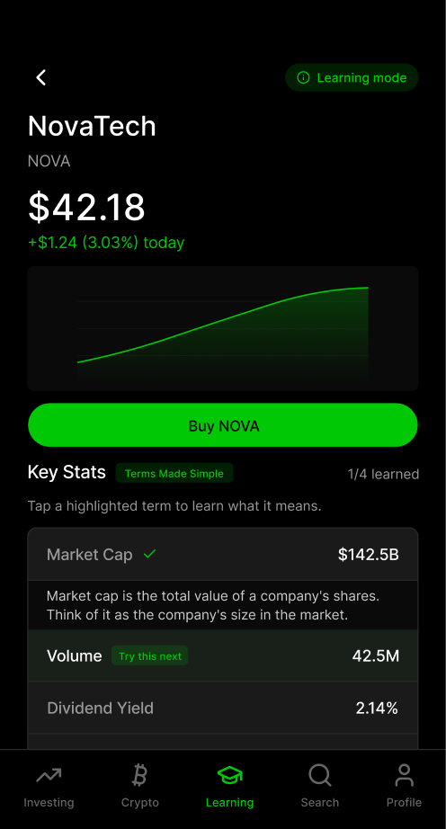
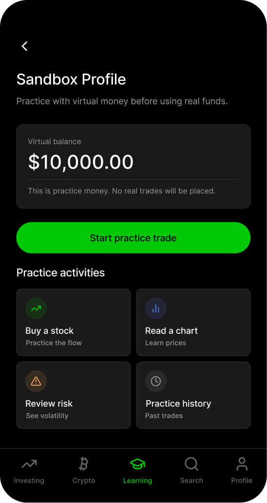
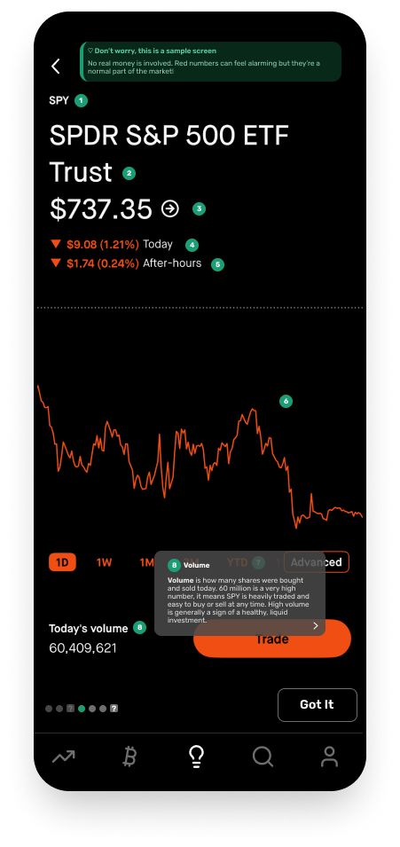
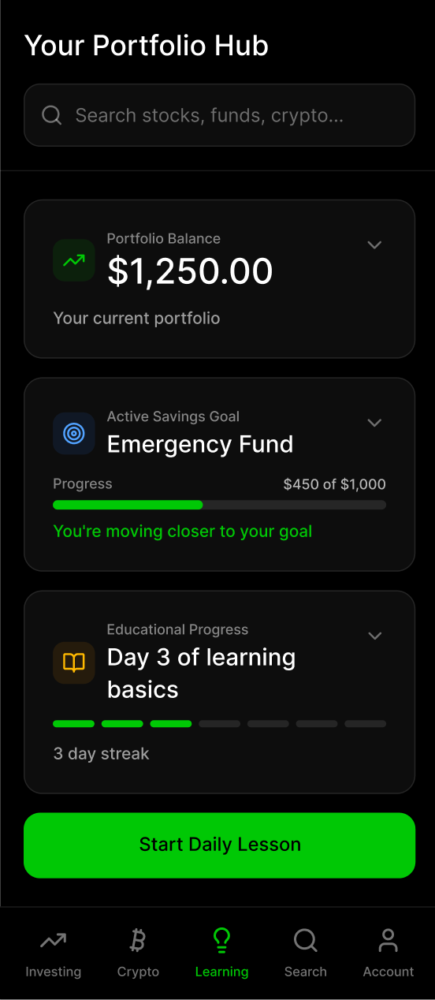
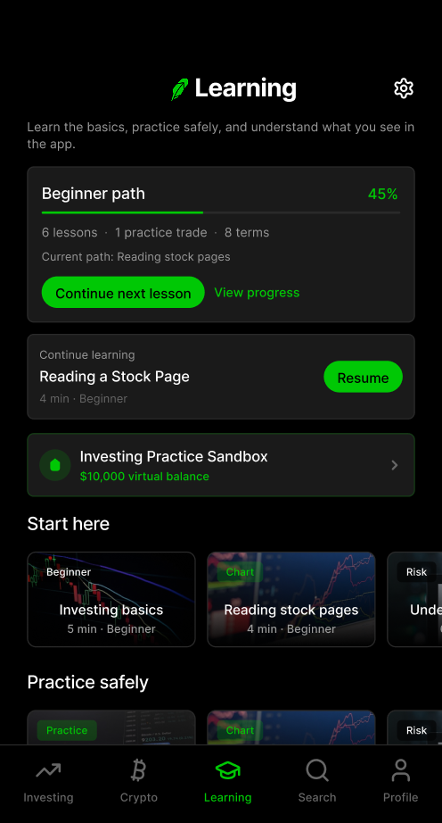

Robinhood sits at the intersection of two significant trends among our generation: a mental health crisis and a surge in investing among financially underprepared young adults. Young adults who are interested in trading stocks and investing while also struggling with mental health conditions may find investing apps such as Robinhood staggering and unintuitive, leaving them feeling uncertain about using such apps to make financial decisions. To bridge the gap between high-risk, overwhelming financial interfaces and the need for mindful, accessible financial literacy, we designed an educational extension for Robinhood that allows users of all experience levels to readily access built-in lessons and to gain a better understanding of financial content.
Through our user research, we found that participants often felt confused or unconfident in the financial decisions they made on Robinhood, and that there was a strong need for accessible, experience-based guidance. Financial literacy levels vary from individual to individual, and what surprised us most was how much that variation fluctuated among participants. We expected people to generally struggle with jargon or complex concepts; what we didn't expect was how quietly the app's visual design had made decisions for users who were less informed. Several participants relied on surface-level cues such as high percentages, popular company names, and trending pages rather than evaluating whether those choices actually aligned with their own financial goals or risk tolerance. By the end of our research, we found ourselves pivoting away from a general UI redesign toward a modular, educational approach.
Introducing: Robinhood Learning View, where users can learn more about investing and using Robinhood at their own pace. Each screen is built around a single insight: the right environment makes financial decisions feel approachable, not overwhelming. Modules are organized by experience level and topic so users never have to guess where to start.

Our research found that without a clear entry point, users defaulted to surface-level cues rather than decisions that matched their actual goals. Explicit experience levels eliminate that friction before it starts.
Learning by doing, without real stakes: Lessons blend simulated Robinhood screens with guided questions, allowing users to build intention inside the app before real money is involved. Because the lesson UI mirrors actual Robinhood patterns, the transition from learning mode to real usage feels fluid rather than like a fresh start.

Building confidence: Comprehension checks ensure users engage actively with each concept rather than passively digesting the content. To lower the stakes, answering each question provides immediate, affirming feedback. Users should leave each lesson feeling confident, not graded. The sandbox carries a labeled virtual balance throughout, a constant reminder that exploring here costs nothing.

After designing our prototypes, we tested two versions with both users from our initial research and new participants. Across both prototypes, the most consistent finding emphasized safety and flexibility over content quality and lesson depth. Participants responded most strongly to features that gave them the freedom to explore and practice the application without repercussions. They also valued navigational clarity and structure that eliminated confusion.
These findings reframed what our extension needed to do. Going forward, we wanted to reposition the sandbox as the default entry point, giving users a flexible, zero-risk environment. Initially, we had designed the modular lesson plans to be the focal point, with the sandbox integrated within lessons. We decided to keep the lesson plans but have them serve as a supplement or guidance instead, letting users learn at their own pace with limited friction.
Our first prototype of the landing page presented a flat list of topic categories, leaving users unsure of where to begin. In the revised version, we organized content by experience level, mode, and subject, including a "Start Here" row, so users always have an immediate, low-pressure action to take. Returning users can view their current progress and resume an in-progress module directly from the landing page. As observed from user feedback, the landing page includes a virtual sandbox with the virtual balance labeled, giving users a visible reminder that they can explore Robinhood freely without the risk of making the wrong decision. The result is a landing page that orients and guides users without overwhelming them.

